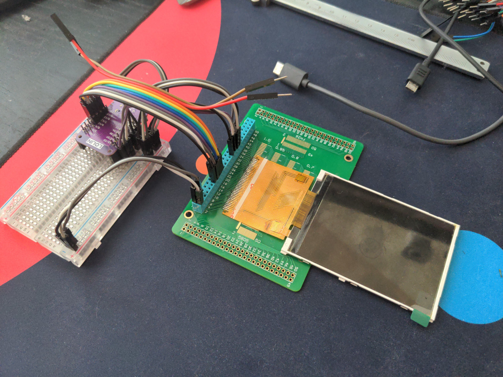
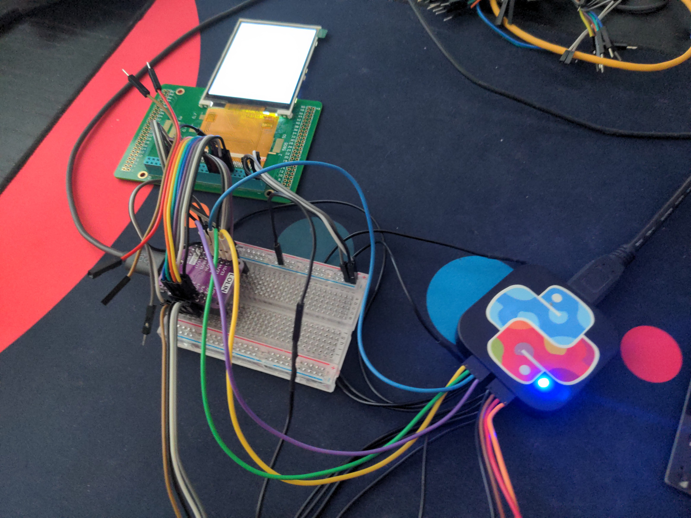

The Return of the Parallel Display¶
Published on 2024-06-07 in PewPew S2.
As I mentioned in the previous log, while the parallel display protocol doesn’t help much with the RP2040 chip, it might be a different story with the ESP32-S2 and S3. So it would be nice to check it, because we have a chance of having really smooth updates if it does work better. Unfortunately, the Xiao has too few pins to drive such a display, so we will need to use a Lolin S3 Mini for our tests, and eventually a WROOM module for the console itself.
Since I already tried that display with the RP2040, I know it has some caveats: you have to move a resistor on it to switch it from 16-bit mode to 8-bit mode, and the data pins are actually numbered backwards. So I connected the display remembering those things:
Then I wrote a simple example program that should start the display. Note that the program is slightly different from what I used last time, because some stuff has been moved to individual modules in version 9 of CircuitPython.
import paralleldisplaybus
import board
import displayio
import busdisplay
_INIT_SEQUENCE = (
b"\x01\x80\x80" # Software reset then delay 0x80 (128ms)
b"\xEF\x03\x03\x80\x02"
b"\xCF\x03\x00\xC1\x30"
b"\xED\x04\x64\x03\x12\x81"
b"\xE8\x03\x85\x00\x78"
b"\xCB\x05\x39\x2C\x00\x34\x02"
b"\xF7\x01\x20"
b"\xEA\x02\x00\x00"
b"\xc0\x01\x23" # Power control VRH[5:0]
b"\xc1\x01\x10" # Power control SAP[2:0];BT[3:0]
b"\xc5\x02\x3e\x28" # VCM control
b"\xc7\x01\x86" # VCM control2
b"\x36\x01\x38" # Memory Access Control
b"\x37\x01\x00" # Vertical scroll zero
b"\x3a\x01\x55" # COLMOD: Pixel Format Set
b"\xb1\x02\x00\x18" # Frame Rate Control (In Normal Mode/Full Colors)
b"\xb6\x03\x08\x82\x27" # Display Function Control
b"\xF2\x01\x00" # 3Gamma Function Disable
b"\x26\x01\x01" # Gamma curve selected
b"\xe0\x0f\x0F\x31\x2B\x0C\x0E\x08\x4E\xF1\x37\x07\x10\x03\x0E\x09\x00" # Set Gamma
b"\xe1\x0f\x00\x0E\x14\x03\x11\x07\x31\xC1\x48\x08\x0F\x0C\x31\x36\x0F" # Set Gamma
b"\x11\x80\x78" # Exit Sleep then delay 0x78 (120ms)
b"\x29\x80\x78" # Display on then delay 0x78 (120ms)
)
displayio.release_displays()
bus = paralleldisplaybus.ParallelBus(
chip_select=board.IO35, # CS
command=board.IO36, # RS
write=board.IO44, # WR
reset=board.IO43, # REST
frequency=2_000_000,
data_pins=[
board.IO18,
board.IO16,
board.IO2,
board.IO4,
board.IO12,
board.IO13,
board.IO11,
board.IO10,
],
)
display = busdisplay.BusDisplay(
bus,
_INIT_SEQUENCE,
width=320,
height=240,
)
And… nothing. The display doesn’t work, all you can see is the white screen of death.
I spent the next few hours trying different combinations of pins, making sure the connections are correct and solid, replacing wires and re-soldering the display to the breakout. I even replaced it with a new display, in case I somehow broke the old one. Nothing helped. When you hit such a spot, it’s time break out the heavy guns: the logic analyzer.
Unfortunately my analyzer only has 8 channels, so I could only monitor the clock and 7 data lines at a time. But I looked at all the signals (CS, RS, WR) and the first 7 bits of data, and they all look correct. The display should be working.
I even tried replacing the S3 with an S2, in case this version has something broken, but still no joy.
At this point I’m out of ideas for things to try. I’m going to leave this on my desk for a couple of days and see if any new ideas present themselves. I might even dig out the RP2040 to make sure it still works with that chip. We will see.